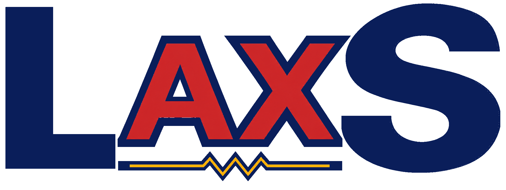
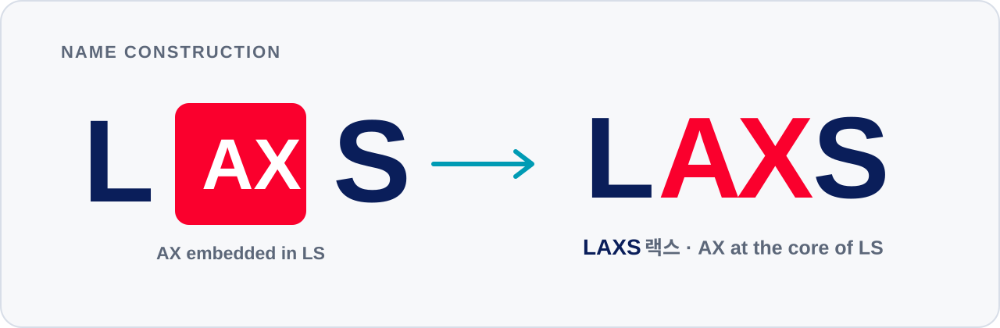
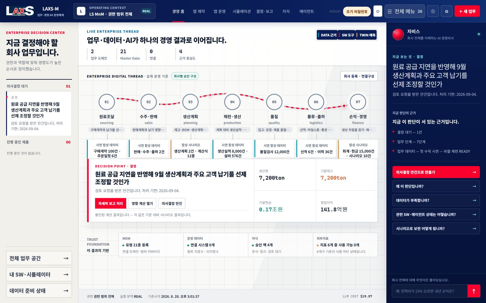
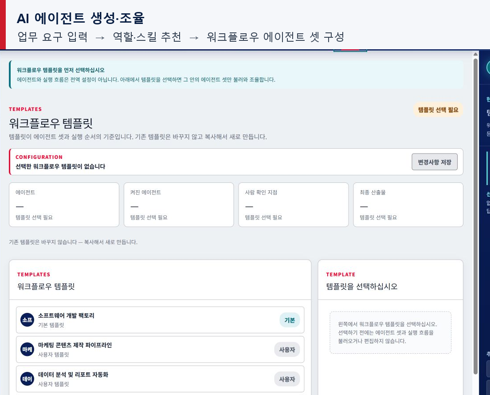

AX embedded in LS. LS의 일과 경영에 AX를 내재화한다는 뜻입니다.
Executive Decision Request · Version 0.4
LS MnM의 AX를
개별 도구가 아닌 경영 운영체계로 전환합니다.
LAXS-M은 현업의 업무 실행, 기업 데이터, 경영 시뮬레이션과 의사결정을 하나의 흐름으로 연결하는 LS MnM의 첫 적용안입니다.
00 · The Name and the Direction
LS 안에 AX를 심고,
현업과 경영을 하나의 흐름으로 연결합니다.
LAXS라는 이름은 AX를 LS의 일과 경영 안에 내재화하겠다는 의지를 담고 있습니다. 별도의 AI 도구를 추가하는 데 그치지 않고, 회사가 일하고 판단하는 구조의 중심에 AX를 두겠다는 제안입니다.


AX at the core of LS. 현업의 실행과 경영의 판단을 AX로 연결합니다.
이 의미와 지향을 첫 번째 현장에 적용한 LS MnM용 시스템 ‘LAXS-M(랙스-엠)’을 제안합니다.
01 · Strategic Rationale
AX의 성과는 도입한 기능 수가 아니라
회사가 스스로 실행하고 판단하는 능력으로 평가해야 합니다.
지양해야 할 AX
업무별 AI 기능 도입
챗봇, 문서요약, 개별 예측모델이 각각 존재하지만 데이터·업무·결정이 연결되지 않아 과제 종료 후 자산이 남지 않습니다.
지양해야 할 AX
외부 SI 중심 반복개발
현업 요구가 바뀔 때마다 다시 설명하고 개발하며 회사의 업무지식과 제품역량이 외부 수행경험으로 흩어집니다.
제안하는 AX
현업 주도 기업 운영체계
회사 데이터와 지식을 공통 기반으로 현업이 앱·시뮬레이션을 만들고 실행 결과를 다시 전사 자산으로 축적합니다.
우리 회사의 AX 전략은 “AI를 어디에 적용할 것인가”에서 출발하지 않고, “회사가 변화에 맞춰 필요한 디지털 업무와 경영 판단을 얼마나 빠르게 스스로 만들어낼 수 있는가”를 핵심 경쟁력으로 삼아야 합니다.
기업 데이터·지식 주권
회사구조, MDM, 데이터 카탈로그, 업무표준, 문서, 용어와 관계를 회사가 직접 관리하고 모든 AI가 같은 의미체계를 사용합니다.
현업의 SW 생산능력
Power User가 요구를 설명하면 AI Agent가 기획·설계·구현·검증을 수행하고 결과는 회사 권한을 상속한 App-in-App으로 운영됩니다.
경영 Digital Twin
수요·환율·원료·에너지·고용 변화가 생산·재고·현금흐름·손익에 미치는 영향을 실제 데이터와 산식으로 비교합니다.
AI 에이전트 운영체계
업무별 AI Agent와 워크플로우를 생성·결합하고 AI 경영비서가 전사 문맥에서 사용자 질의, 진행 설명, 품질과 비용 통제를 지원합니다.
Decision-to-Execution
시뮬레이션 결과가 검토서·회의·결정·실행과제로 이어지고 실제 효과와 피드백이 다음 지식과 모델 개선에 반영됩니다.
전사 데이터·지식 통합
각 부서의 앱에서 생성·관리되는 데이터와 업무지식, Agent의 실행 결과가 공통 기준과 권한 아래 전사 데이터베이스와 지식허브에 축적됩니다. 부서별로 단절된 정보가 서로 연결되어 회사 전체가 함께 활용하는 기업 지식자산으로 발전합니다.
02 · Operating Model
LAXS-M은 데이터에서 판단까지 끊어진 구간을 연결하는
경영 실행 플랫폼입니다.
LAXS-M · Living Enterprise Platform
회사구조와 권한을 공통 기준으로 삼아 데이터·지식·현업 SW·경영 시뮬레이션·AI Agent·의사결정을 연결합니다. ERP·MES·LPL 등 기존 원천 시스템은 유지하고 필요한 데이터와 업무 흐름만 계약 기반으로 연계합니다.
현재 상태핵심 아키텍처와 주요 경로를 구현·검증하고 있습니다. 실제 적용 단계에서는 Power User와 업무 데이터를 연결하여 사용성, 데이터 품질과 경영 효과를 단계별 Gate로 확인합니다.
기업 문맥·권한
지주사·회사·사업부·공장·가상회사·권한
데이터·지식 관리
MDM·카탈로그·Graph RAG·Lineage·Crosswalk
현업 SW 생성
상담·요구명확화·기획·WBS·구현·검증·Release
앱 협업·전달
부서 간 앱 전달·승인·권한상속·업무연결
경영 시뮬레이션
Actual·Plan·Forecast·Scenario·결정론 계산
AI 에이전트 운영
업무 Agent·Skill·Workflow·모델 비용/품질 라우팅
AI 경영비서
전사 질의·상담·진행설명·제어·위험개입
의사결정·보고
검토서·회의요청·실행과제·대내외 보고서
02-1 · Guardrails & Learning Loop
회사 데이터는 통제영역에 두고,
실행 결과는 다음 판단의 자산으로 축적합니다.
보안과 비용 통제는 별도 운영절차가 아니라 제품의 실행 경계로 적용하고, 승인된 결과만 다음 데이터·지식·Agent 개선에 반영합니다.
회사 데이터는 회사의 통제영역에 남습니다.
사내 민감정보와 원본 문서는 자체 데이터베이스·지식허브에서 권한과 이력에 따라 별도 관리합니다. 외부 LLM에 내부 저장소 전체를 직접 연결하거나 회사 자료를 모델 학습용으로 제공하지 않습니다. RAG가 사용자 권한과 업무 목적에 맞는 최소한의 문맥만 선별하여 기업용 API 호출 시 조합·추론을 지원하고, 결과와 근거는 다시 내부 통제영역에 저장합니다.
품질에 필요한 만큼만 LLM 비용을 사용합니다.
단일 고가 모델에 모든 작업을 맡기지 않습니다. 문서 분류·검색·요약·코드 생성·품질판정의 난이도와 보안등급, 문맥길이에 따라 여러 LLM을 API로 선택·조합합니다. 경제적인 모델에서 시작해 품질기준을 충족하지 못할 때만 상위 모델로 전환하고, RAG·캐시·결정론적 검증을 함께 사용하여 토큰 사용량과 재호출을 최소화합니다.
End-to-End Flow가 만드는 회사의 학습구조
현업 문제요구·데이터
→
SW·시뮬레이션생성·실행
→
경영 결정검토·승인
→
실행·효과결과·피드백
실행 결과는 다시 데이터 카탈로그·지식허브·업무표준·Agent Skill로 축적되어 다음 앱과 시뮬레이션의 품질을 높입니다.
03 · Legacy Connection & Enterprise Data Architecture
기존 시스템을 교체하지 않고 연결하여
분산된 업무 데이터를 하나의 경영 언어로 전환합니다.
ERP·MES·LPL과 같은 외부 참여자 입력 포털, 부서 파일과 문서, 공공기관의 외부지표는 각자의 역할을 계속 수행합니다. LAXS-M은 이 시스템들 위에 통합 데이터·지식·시뮬레이션 계층을 형성하여 서로 다른 코드와 시점, 단위를 공통 기준으로 연결합니다.
LAXS-M 전체 데이터 구조도
하단의 원천 업무데이터가 연계·정합화와 전사 통합 데이터·지식 계층을 거쳐, 상단의 현업 SW와 경영 Digital Twin·의사결정을 지원합니다.
현업 생성 SW부서 특화 업무·입력·조회·협업
경영 Digital Twin가정·제약·시나리오·영향 계산
AI 경영비서·에이전트질의·분석·업무흐름·통제 지원
Decision Package검토서·회의·승인·실행과제
경영·대내외 보고실적·전망·위험·설명 가능한 근거
↑
ENTERPRISE CONTEXT그룹 → 회사 → 사업부 → 공장 → 조직·사용자
모든 데이터와 권한의 최상위 범위
모든 데이터와 권한의 최상위 범위
MDM & CATALOG고객·거래처·품목·제품·공정·설비·계정·원가중심
용어·소유자·품질·버전
용어·소유자·품질·버전
INTEGRATED DATA LAYERActual·Plan·Forecast·Scenario
업무 이벤트·관계·시계열·집계와 원천 Lineage
업무 이벤트·관계·시계열·집계와 원천 Lineage
KNOWLEDGE & GRAPH RAG문서·업무표준·의사결정·실행결과
연관관계 검색과 권한 기반 문맥 구성
연관관계 검색과 권한 기반 문맥 구성
↑
API·MCP실시간·요청형 연계
Event·Batch변경·주기 수집
File Connector검증 후 적재
Crosswalk코드·단위·동의어 변환
Data Contract품질·권한·이력·계보
↑
ERP수주·구매·재고·매입·매출·회계·원가·자금
MES·QMS·설비생산계획·실적·투입·수율·품질·비가동·에너지
LPL 등 외부 입력 포털거래처·통관사·운송사의 선적·통관·도착·운송 정보
파일·문서·업무표준Excel·PDF·계약·계획·회의록·매뉴얼·현업 노하우
검증된 외부지표환율·금리·원자재·운임·에너지·고용·산업수요
03-1 · Integration Principles
연계는 전량 복제가 아니라
원천 책임·보안등급·업무 목적에 따라 선택합니다.
원천 시스템의 책임을 유지하고, 외부 참여자에게 경영플랫폼을 직접 개방하지 않으며, 데이터마다 복제·가상참조·집계 방식을 구분합니다.
원천 시스템의 책임을 존중합니다.
ERP·MES·LPL 등은 원천 거래와 현장 데이터를 계속 책임집니다. LAXS-M은 필요한 데이터만 복제·참조·집계하고 원천 위치와 변경이력을 보존합니다.
기존 외부 포털을 안전하게 활용합니다.
거래처·통관사·운송사는 기존 포털에 입력하고, 필요한 결과만 API·MCP·배치로 연계합니다. 경영플랫폼 자체를 외부 참여자에게 개방하지 않습니다.
목적과 보안등급에 따라 연결합니다.
통합 데이터 레이어는 단일 거대 복제DB가 아니라 데이터별로 복제·가상참조·집계 방식을 선택하는 논리적 통합계층입니다. 권한·품질·Lineage는 공통으로 관리합니다.
04 · Business Problems We Can Solve
정보를 보여주는 시스템을 넘어
경영 문제의 원인·대안·영향을 함께 판단하게 합니다.
실적을 사후 집계하는 데서 끝나지 않고, 수주부터 구매·생산·품질·물류·판매·재무까지 이어지는 인과관계를 추적합니다. 경영진은 변화가 어디서 시작되어 손익과 현금흐름에 어떻게 전달되는지 확인하고, 실행 전에 대안을 비교할 수 있습니다.
매출 전망을 조기에 확인
- 현재 문제
- 수주잔고·납기·생산능력·판매전망이 별도 자료로 관리되어 매출 예상이 늦고 자주 바뀝니다.
- 실질적 도움
- 수주와 생산·출하 가능성을 연결하여 예상 매출, 지연 위험과 고객별 손익을 조기에 보여줍니다.
가격·도착 변동에 선제 대응
- 현재 문제
- 원료가격·환율·운임·입항일 변화가 재고와 생산, 자금에 미치는 영향이 여러 부서에 흩어집니다.
- 실질적 도움
- 구매조건과 도착계획을 생산·재고·현금흐름에 연결해 발주 시점과 물량 대안을 비교합니다.
생산계획의 실행 가능성 검증
- 현재 문제
- 수요계획은 있으나 병목설비·정비·수율·인력 제약을 함께 반영한 대안 비교가 어렵습니다.
- 실질적 도움
- 공정능력과 제약조건으로 생산계획을 시뮬레이션해 납기, 생산량, 원가와 병목을 사전에 확인합니다.
품질문제의 영향범위 추적
- 현재 문제
- 불량·클레임 발생 시 원료 LOT, 공정조건, 설비, 출하처를 여러 시스템에서 수작업으로 추적합니다.
- 실질적 도움
- 원료–공정–제품–고객 관계를 연결하여 영향범위, 잠재 손실과 우선 조치대상을 신속하게 산정합니다.
지연과 과잉재고 동시 관리
- 현재 문제
- 선적·통관·운송·창고 정보가 분리되어 결품과 체선, 과잉재고 위험을 함께 보기 어렵습니다.
- 실질적 도움
- ETA와 생산소요, 안전재고를 연결해 지연경보와 재배치·대체조달 시나리오를 제안합니다.
손익·현금 영향을 조기에 예측
- 현재 문제
- 회계 실적은 정확하지만 사후 결과이며, 현업 변화가 월말 손익과 현금흐름에 미칠 영향을 미리 알기 어렵습니다.
- 실질적 도움
- 가격·물량·원가·재고·회수조건을 연결해 Forecast와 Scenario 손익·현금을 조기에 계산합니다.
계획을 살아 있는 가정체계로
- 현재 문제
- 사업계획이 제출용 Excel에 고정되어 가정 변경 때 부서별 숫자를 다시 취합해야 합니다.
- 실질적 도움
- 수요·가격·환율·원가·투자·인력 가정을 연결해 기준안·낙관안·비관안을 즉시 비교합니다.
결정 근거와 실행결과 축적
- 현재 문제
- 회의자료와 결정, 실행과제, 사후효과가 분리되어 왜 결정했는지와 실제 효과가 조직지식으로 남지 않습니다.
- 실질적 도움
- 시뮬레이션 근거로 검토서를 만들고 결정–과제–실적을 연결하여 다음 판단에 재사용합니다.
경영진이 직접 조정해 볼 수 있는 질문
하나의 가정을 바꾸면 해당 부서의 숫자만 바뀌는 것이 아니라 가치사슬 전체의 연쇄영향을 계산합니다.
환율이 5% 상승하면?원료 매입 → 재고평가 → 제품원가 → 영업이익 → 현금소요
전기료가 10% 오르면?공정별 에너지비 → 단위원가 → 제품별 수익성 → 판매전략
원료 입항이 7일 늦어지면?안전재고 → 생산차질 → 납기·매출 → 대체조달 비용
고용을 30명 늘리면?인건비·교육기간 → 생산능력 → 추가매출 → 손익분기 시점
LAXS-M의 실질적 가치는 더 많은 화면을 제공하는 데 있지 않습니다. 회사 곳곳의 사실을 하나의 경영 문맥으로 연결하고, 변화가 발생했을 때 더 일찍 위험을 발견하며, 실행 전에 대안을 비교하고, 결정 이후 실제 효과까지 학습하는 데 있습니다.
05 · Effects and When They Appear
효과는 시스템 오픈일이 아니라
실제 업무 이벤트가 연결될 때 단계적으로 드러납니다.
| 효과 발생 조건 | 처음 확인할 변화 | 목표 확인 시점 | 측정 방법 | 장기 의미 |
|---|---|---|---|---|
| 회사구조·핵심 데이터·문서 등록 | 어떤 데이터가 어디에 있고 누가 책임지는지 가시화 | 착수 후 2~4주 목표 | 데이터 오너 식별률, 검색시간, 누락목록 | 전사 데이터·지식 주권 확보 |
| 첫 Power User 앱 실사용 | 요구→기능 사용까지 시간과 반복 설명 감소 | 첫 앱 적용 후 즉시 | 생성시간, 수정횟수, 사용빈도 | 현업 SW 생산능력 내재화 |
| 2개 이상 부서의 업무연결 | 재입력·누락·대기와 진행상태 불명확 감소 | 업무 1회 완주 후 | Lead Time, 재입력, 누락, 승인대기 | 부서 간 Digital Thread 형성 |
| 실제 데이터 기반 시뮬레이션·결정 | 대안 준비시간 감소와 영향근거 명확화 | 첫 경영회의 적용 시 | 시나리오 준비시간, 근거추적, 채택결정 | 경영 Digital Twin의 실사용 |
| 두 번째 앱·조직에 재사용 | 기존 데이터팩·Agent·기능의 재사용률 확인 | 두 번째 적용 완료 시 | 코어 재사용률, 추가개발량, 적용기간 | 그룹 확장 가능한 제품성 증명 |
표시한 시기는 실행 목표이며 확정 성과가 아닙니다. 승인 직후 Power User의 업무주기와 데이터 준비상태를 확인해 세부 Calendar를 확정하고, 효과는 반드시 적용 전 기준선과 비교합니다.
06 · First Corporate Use Case
첫 적용은 기능 시연이 아니라
부서와 경영을 연결하는 하나의 End-to-End Flow여야 합니다.
1호 수직 실행 흐름 · 제품 검증 완료
원료 공급지연 → 재고부족 → 생산차질 → 매출·손익 영향
비철금속 업무키트의 인증된 합성 데이터 7종을 봉인하고, 30일 공급지연이 생산량·영업이익·현금에 미치는 영향을 계산해 검토 대기 의사결정 안건으로 연결했습니다.
검증 결과: 생산량 -4,800 ton · 영업이익 -98.2억원 · 기말현금 -165.4억원. 수치는 기능 검증용 DEMO/SYNTHETIC이며 실제 실적이나 확정 ROI가 아닙니다.
인증판 7종 결속
구매·선적·이력·재고·생산·BOM·판매 데이터를 같은 시점과 조직 범위로 봉인했습니다.
승인 산식으로 연쇄 계산
도착지연·자재부족·생산가능량·매출 이연을 하나의 경로에서 계산했습니다.
의사결정 안건 전환
결과와 지문을 봉인해 경영 홈의 검토 대기 안건과 상세 근거로 연결했습니다.
실제 파일럿에서 효과 측정
현업 Native 입력·실제 승인자료를 연결해 리드타임, 재작업, 판단시간과 재무효과를 측정합니다.
07 · Lean Enterprise AX Core Team
초기에는 대규모 조직이 아니라
제품총괄 1명과 Power User 3~4명의 정예팀이면 됩니다.
전사 AX Core Team · 소수 정예
제안자가 AX 전략과 제품을 총괄하고, 실제 업무와 데이터를 가진 3~4명의 Power User가 부서 대표로 참여합니다. AI 설계·개발은 현재와 같이 제안자와 AI Agent Team이 수행하므로 초기 대규모 엔지니어 채용을 전제하지 않습니다.
팀 운영 원칙직급보다 실제 자료를 확보하고 업무를 바꿀 수 있는 사람 · 겸임 명목이 아니라 정해진 시간을 투입할 사람 · 보고용 테스트가 아니라 본인 업무에 직접 사용할 사람
전략, 제품, Agent Team, 우선순위, 경영진 보고, 성과와 사내벤처 준비 총괄
자료수집·등록, 업무기준 설명, 앱 생성·실사용, 시뮬레이션 검증, 개선제안
상시 TF가 아니라 특정 데이터·정책·권한 결정이 필요할 때 제한적으로 참여
임원 Top-down 지시
- AX Core Team과 Power User 3~4명 지정
- Power User의 공식 업무시간 배정
- 부서 자료·데이터·업무기준 제공 협조
- 부서 간 충돌 시 AX 과제를 우선 조정
초기 범위에서 제외
- 대규모 개발조직 구성
- ITO의 초기 제품개발 참여
- 전사 시스템 일괄 교체
- 모든 부서의 동시 참여
후속 지원 연결
- 실운영 인프라·레거시 연계 시 IT/ITO 협의
- IP·조직분리 시 법무·인사·전략 참여
- 그룹 확산 시 계열사 담당자 연결
- 필요한 비용만 항목별 승인
08 · Focused Resources & Stage-Gated Approval
소수정예 실행조직과 회사의 데이터,
현재 기술환경을 기반으로 단계적으로 시작합니다.
시간과 역할
제안자의 제품총괄 역할, Power User 3~4명의 공식 업무시간과 부서 협조
자료·접근권
업무문서·기준정보·실적·계획 데이터와 데이터 오너 협의창구
기존 환경 활용
현재 개발환경·LLM·저장소를 우선 사용하고 추가비용은 사용근거와 함께 항목별 승인
신속한 의사결정
권한·보안·IP·조직 이슈가 발생할 때 담당조직과 지연 없이 결정할 경로
초기에는 현재 인력과 기술환경을 최대한 활용합니다. 이후 운영 인프라, 보안, 데이터 연계 등 추가 자원이 필요한 시점에는 적용 범위와 기대효과, 기존 자원의 재사용 가능성을 확인하여 단계별로 결정합니다.
09 · From Company Standard to Group Management Platform
당사를 AX 표준의 출발점으로 삼아
전 그룹사의 경영플랫폼으로 확장합니다.
그룹 확장에 필요한 운영모델을 파일럿과 함께 검토합니다.
LAXS-M의 실사용·재사용·경제성이 확인되면 공통 코어를 그룹 플랫폼 LAXS로 발전시키는 방안을 검토할 수 있습니다. 초기에는 사내 TF로 제품성과 적용성을 검증하고, 그룹 중립성·전담 R&D·IP 운영 필요성이 확인되는 시점에 사내벤처 또는 분리조직을 별도 안건으로 판단합니다.
핵심 원칙조직 독립을 미리 확정하지 않습니다. 제품·IP·핵심인력·그룹 운영과 정산의 경계는 설계하되, 전환 여부와 시점은 실사용 End-to-End Flow, 두 번째 재사용, 그룹사 수요와 독립 경제성 근거로 결정합니다.
그룹 공통 기준과 계열사별 특화 요구를 조정할 수 있는 운영구조
코어 로드맵·품질·보안 책임의 명확한 귀속
라이선스·구축·운영·내부정산의 지속 가능성 검증
제품 성장단계에 맞는 인력·보상·파트너 운영
제품·IP 경계
코어, 회사 데이터, 업무지식, 산업팩과 기여관계를 구분합니다.
조직·인력안
제품총괄, 핵심인력, Power User Network와 단계별 운영구조를 설계합니다.
그룹 운영모델
계열사 라이선스, 도입비, 데이터 격리와 공통·특화 기능의 원칙을 정리합니다.
시간이 아니라 증거
실사용, 재사용, 그룹사 수요와 독립 경제성이 확인될 때 조직 대안을 상정합니다.
10 · AX Success Measures
AX 성과는 AI 사용량이 아니라
회사의 실행속도와 학습능력으로 측정합니다.
등록 데이터셋, 데이터 오너, Power User 사용일수, 생성한 앱과 시나리오
요구→앱 사용시간, 부서간 Lead Time, 재입력·누락, 시나리오 준비시간
근거가 연결된 경영결정, 실행과제, 사후 효과측정, 재사용된 지식
두 번째 앱·부서·회사 적용 시 코어 재사용률과 추가 작업량
중복개발·SI·수작업·재작업 감소와 의사결정 개선가치
계열사 도입의향, 라이선스 가능성, 독립조직 경제성과 파트너 확장성
11 · Executive Decisions for AX Execution
AX 전략을 실행으로 전환하기 위해
다음의 추진체계와 운영원칙을 제안합니다.
승인 요청안
- 회사의 AX 실행방향을 `기업 데이터·지식 기반 현업 SW 생산 + 경영 시나리오 검증 + Decision-to-Execution`로 확정
- LAXS-M을 1호 파일럿의 공식 실행 플랫폼으로 지정하고 전사 표준화는 Gate 결과로 재결정
- AX & Product Lead와 Power User 3~4명으로 구성한 전사 AX Core Team 승인
- 보안 범위 내 자료·데이터 제공과 Power User 공식 업무시간 배정
- 기존 기술환경을 우선 활용하고 추가 자원은 측정 결과와 필요성에 따라 단계별 승인
- 그룹 확산과 조직 대안은 실사용·재사용·경제성 근거가 충족될 때 별도 안건으로 검토
이번 단계의 목표: 첫 업무에서 측정 가능한 결과를 만들고, 리드타임·재작업·데이터 품질·의사결정 시간·재무 효과를 기준선과 비교해 다음 투자 여부를 판단하는 것입니다.
회사 맞춤 확정에 필요한 정보: 보고 대상 임원과 의사결정 방식, Power User 후보 3~4명, 1호 적용업무의 현재 자료·시스템·처리주기, 공개 가능한 현재 문제와 기대효과, 사내벤처·직무발명 관련 내부제도.
Appendix · Actual Product Screens
주요 기능은 실제 구현 화면 근거로 확인할 수 있습니다.
아래 화면은 문서용 목업이 아니라 2026.08.28 현재 LAXS-M에서 직접 캡처한 구현 화면입니다. 최신 메뉴 체계, 업무 온톨로지, 대외 인텔리전스, 시뮬레이션과 의사결정·보고 기능을 반영했습니다.




화면 기준: 캡처는 LAXS-M 최신 UI이며 AI 경영비서는 자비스로 표시합니다. 화면 수치는 실제 활용 흐름을 검증하기 위한 시연용 합성 데이터입니다.
Appendix · AI Trust Q&A
AI 학습·데이터 보호·RAG를
과장 없이 설명합니다.
현재 구현과 파일럿 전 추가 통제를 구분합니다. 외부 모델의 자율 학습이나 완전 비노출을 주장하지 않고, 회사가 승인·회수·감사할 수 있는 구조를 우선합니다.
입력 데이터로 강화학습합니까?
온라인 모델 가중치 학습은 하지 않습니다. 업무 결과를 기록하고 RAG·업무 규칙·에이전트 스킬의 개선안을 평가·승인한 뒤 버전 단위로 반영합니다.
외부 LLM에 데이터가 노출되지 않습니까?
전송한 최소 문맥은 공급자 시스템에서 처리됩니다. 기업용 API의 학습 금지와 함께 데이터 등급·마스킹·보존·외부 전송 게이트를 적용해야 합니다.
사람이 검색 점수를 매깁니까?
사람은 자료의 정본성과 사용 범위를 승인합니다. 문서 분할·로컬 임베딩·유사도 계산·권한 필터·근거 연결은 시스템이 자동 수행합니다.
‘학습에 사용하지 않음’, ‘저장하지 않음’, ‘외부로 전송하지 않음’은 서로 다른 보증입니다. 상세 기준과 공급자 정책은 AI 학습·데이터 보호·RAG Q&A 문서에서 별도로 관리합니다.